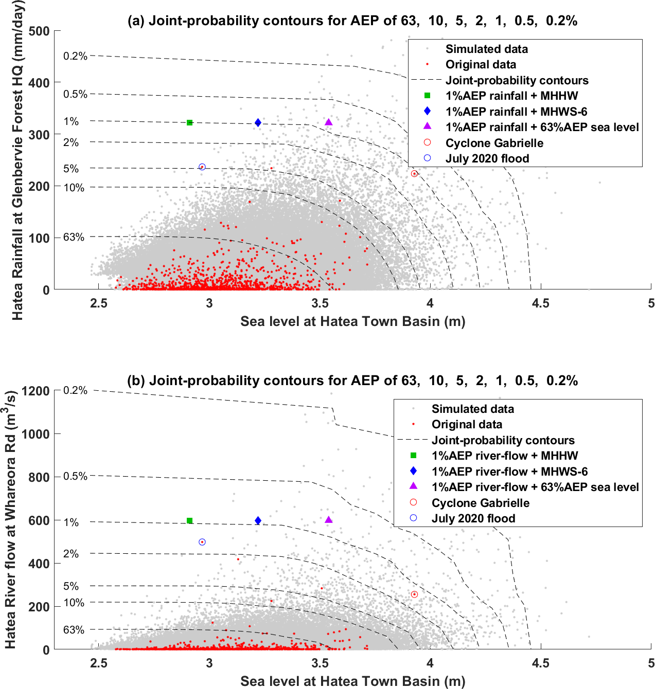
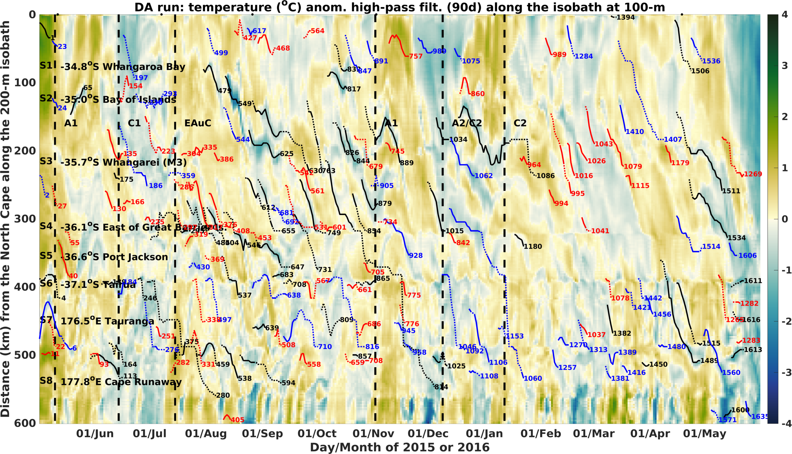

Rafa Santana
 View peer-reviewed publications on ORCID
View peer-reviewed publications on ORCID
I study how coastal and open-ocean systems vary, from equatorial waters to polar regions. My research combines satellite and in situ observations with numerical modelling and data-assimilation methods, including EnOI and 4D-Var. Selected work includes Santana et al. (2018, 2019, 2020, 2021, 2023 and 2025).
At Earth Sciences New Zealand, I investigate past and future ocean conditions to help communities prepare for extreme events and support safe, productive marine operations.
One example is our reconstruction of a large storm that caused coastal inundation in southeastern Aotearoa New Zealand. The animation below shows waves simulated with WAVEWATCH III, driven by atmospheric forecasts produced in-house. Further details are available in Santana et al. (2025).
Significant wave height (m; colour shading and white arrows) and winds (black arrows), 26–30 June 2021. White arrows show wave direction and relative magnitude.
Interested in collaborating or discussing a new idea? Email me or connect through one of the platforms below.
Coastal hazards and compound extremes
Simulating waves during Tropical Cyclone Harold
To examine the coastal wave response to Tropical Cyclone Harold, I used the SWAN wave model with winds from the Tropical Cyclone wind generator (TCwindgen) and the ERA5 reanalysis. The animation compares the modelled wave field with time series at four locations.
Left: significant wave height (m; colour shading and white arrows) and winds (black arrows) during Tropical Cyclone Harold. Right: modelled time series at four locations using SWAN forced by TCwindgen and ERA5.
Joint-probability analysis of extreme events
Coastal flooding is often driven by several processes occurring together. During Cyclone Gabrielle, heavy rainfall, high river flow and elevated sea levels affected New Zealand’s North Island at the same time. We estimated the rarity of these combined conditions in Whangārei using the conditional-extremes method developed by Heffernan and Tawn (2004).

Joint-probability relationships between sea level and rainfall (top), and sea level and Hātea River flow (bottom), in Whangārei. Red dots are observations, grey dots represent 20,000 simulated years, and dashed lines show annual exceedance probability (AEP) contours from 63% to 0.2%. The green square, blue diamond and purple triangle combine the 1% AEP rainfall or river flow with three sea-level benchmarks: mean higher high water (MHHW), the 94th percentile of mean high water springs (MHWS-6), and the 63% AEP sea level. Cyclone Gabrielle (red circle) and the July 2020 flood (blue circle) are highlighted. Sea levels are relative to NZVD2016.
East Auckland Current and cross-shelf exchange
A year in the life of the East Auckland Current
I completed a PhD in Marine Science and Mathematics at the University of Otago in 2022, in partnership with the National Institute of Water and Atmospheric Research (NIWA). My research examined the drivers of variability in the East Auckland Current (EAuC) and the consequences for shelf–slope connectivity and carbon export.
The first chapter, published as Mesoscale and wind-driven intra-annual variability in the East Auckland Current, follows one year of regional circulation. Mesoscale eddies—rotating bodies of water roughly 100 km across—dominated the circulation on 260 days, while the EAuC was present on 110 days. Winds drove shorter-period changes in velocity and temperature on timescales of less than 30 days.
Sea-surface-temperature anomalies (colour shading), geostrophic currents (black arrows) and daily averaged in situ velocities (coloured arrows) on six dates between May 2015 and April 2016. The panels highlight the mesoscale structures A1, C1, EAuC, A1, A2/C2 and C2.
Modelling the East Auckland Current
Satellite and local in situ observations reveal only part of the regional dynamics. Numerical models complement these measurements by providing daily, three-dimensional estimates of ocean conditions. In the comparison below, the model captures the broad temperature structure but underrepresents mesoscale eddy variability.

Left: sea-surface height from satellite observations (black contours) and the model (colour shading), with observed and modelled currents. Right: observed temperature (contours) and modelled temperature (colour shading) along the grey transect shown on the map.
Why data assimilation matters
Mesoscale eddies arise from ocean instabilities, so their exact timing and position are difficult to predict. Data assimilation combines satellite and in situ observations with a numerical model to keep the simulation closer to the observed ocean while accounting for uncertainty in both the model and the measurements.
Conceptual view of ocean data assimilation. Source: Joint ECMWF/OceanPredict workshop on Advances in Ocean Data Assimilation.
Applying data assimilation to the East Auckland Current
Using the Regional Ocean Modeling System (ROMS) and 4D-Var, we assimilated satellite-derived sea-surface height and temperature together with temperature, salinity and velocity measurements from moorings M3, M4 and M5. Santana et al. (2023) describes the experimental design and validation. In the animation, the data-assimilating simulation on the right represents mesoscale eddies more accurately than the freely evolving simulation on the left.
Comparison of a freely evolving simulation (Control-JRA55do; left) and a simulation that assimilates sea-surface height, sea-surface temperature, and moored velocity, temperature and salinity observations (right). Satellite sea-surface height is shown by black contours, modelled sea-surface height by colour shading, and observed and modelled currents by coloured and black arrows.
How eddies drive cross-shelf exchange
Cross-shelf flows are typically about ten times weaker than along-shelf currents, yet they are essential for renewing shelf waters and transporting material into the deep ocean. In Santana et al. (2025), we tracked eddies formed on the continental shelf to quantify their role in cross-shelf exchange. Some travelled offshore while retaining river-derived tracers, illustrating a potential pathway for organic carbon and other materials to reach the deep ocean.
Left: river tracer (green shading) and coastal-eddy tracks (blue lines). Right: a cross-section of the river tracer along the magenta transect shown on the map.
Eddy-driven uplift at the shelf break
Cold-core cyclonic eddies can lift deeper water onto the shelf, producing temperature anomalies as low as −1.5 °C. This uplift may deliver nutrient-rich water to the shelf and could help moderate shelf-break temperatures during marine heatwaves—an increasingly important process in a warming climate.

Temperature anomalies along the 200-m isobath in the data-assimilating simulation after applying a 90-day high-pass filter. Tracks show coastal cyclones (black), slope cyclones (blue) and anticyclones (red). Solid tracks encroach onto the shelf break; dotted tracks move away from it. Labels A1, C1, EAuC, A2/C2 and C2 identify mesoscale structures examined in Santana et al. (2021).
Polar science
As a research fellow at the University of Auckland, I joined the Scale-Aware Sea Ice Project (SASIP) to study ocean–ice interactions around Antarctica using the neXtSIM sea-ice model. The animation below shows an application of neXtSIM in Fram Strait.
Sea-ice concentration in Fram Strait simulated with the Lagrangian sea-ice model neXtSIM. Credit: Nansen Environmental and Remote Sensing Center.
Comparing sea-ice rheologies
My collaborators and I developed and validated an Antarctic configuration of neXtSIM (Santana et al., 2025). We compared two representations of sea-ice deformation: a modified viscous–elastic–plastic rheology (mEVP), widely used in climate models, and the brittle Bingham–Maxwell rheology (BBM). In our experiments, BBM represented sea-ice fractures triggered by atmospheric events more realistically than mEVP.
Daily Antarctic sea-ice drift from satellite observations (left), the modified viscous–elastic–plastic simulation (mEVP; centre) and the brittle Bingham–Maxwell simulation (BBM; right).
Cyclones fracture the ice more effectively in the BBM simulation, producing more leads—long, narrow openings in the sea ice. During winter, the BBM simulation also tended to form more sea ice than the mEVP simulation. During the melt season, greater fragmentation could accelerate melting because smaller ice floes melt more quickly than larger ones. Testing this mechanism in coupled sea-ice–ocean models is a focus for current research.
Six-hourly Antarctic sea-ice growth (m/day) in the modified viscous–elastic–plastic simulation (mEVP; left) and the brittle Bingham–Maxwell simulation (BBM; right).